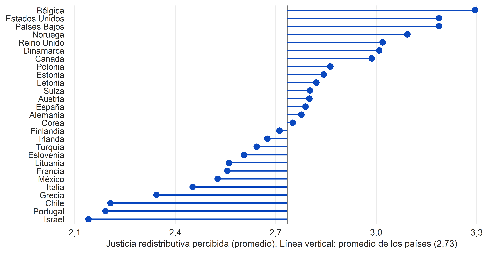
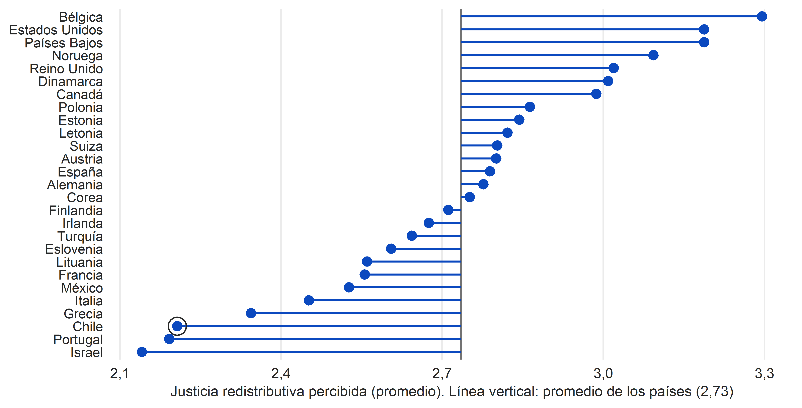
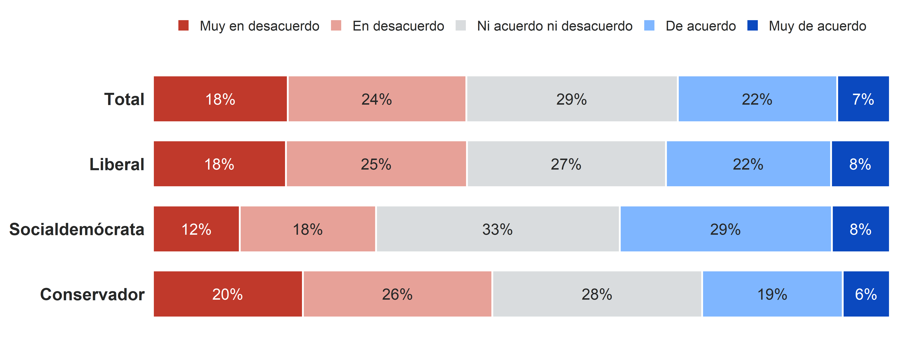
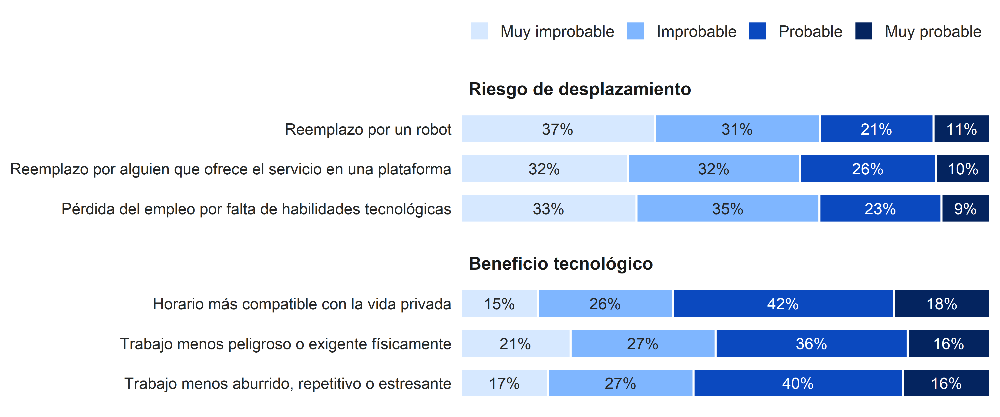
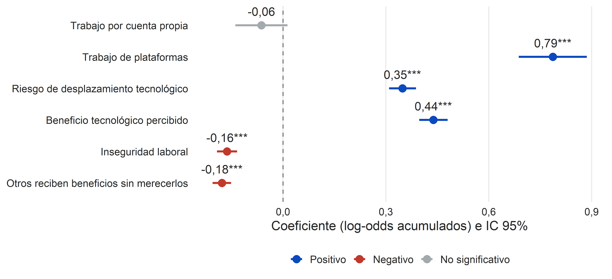
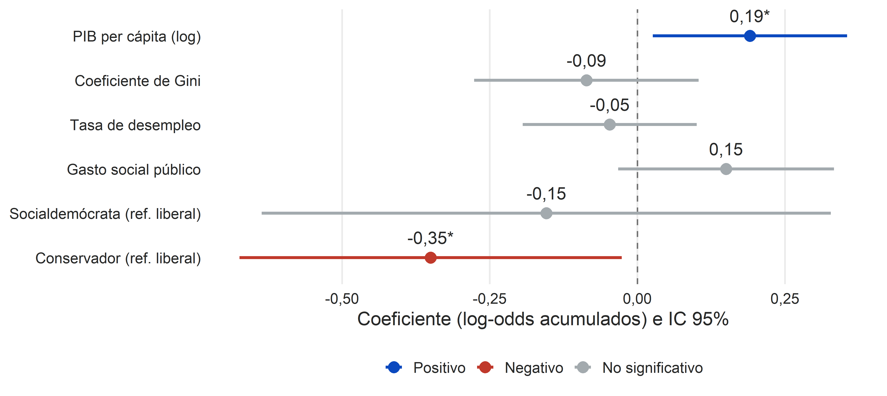
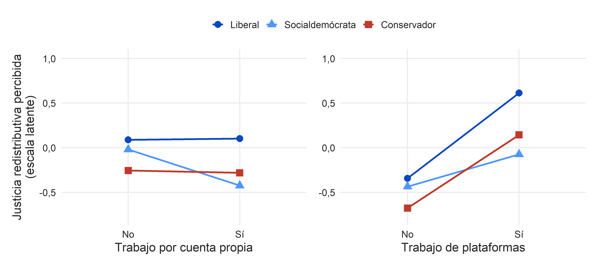
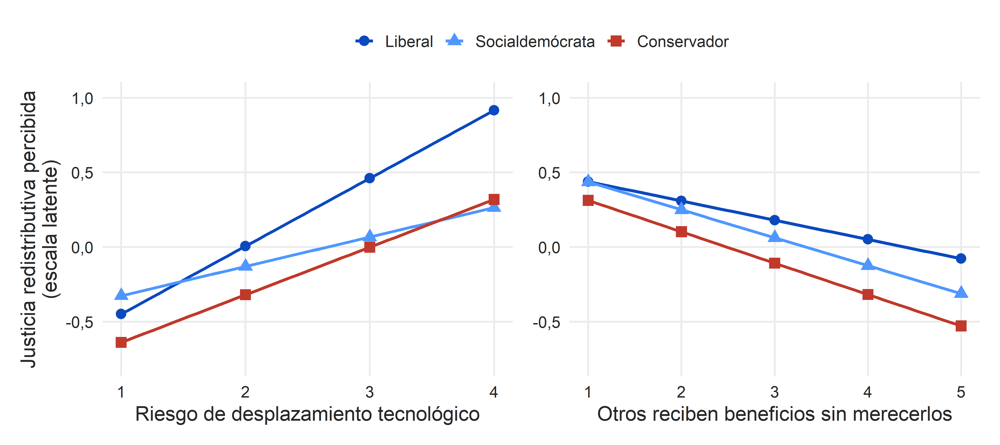

Justicia redistributiva, posición laboral y perceción del riesgo tecnológico: cómo la posición en el mercado laboral modera la legitimidad del Estado de bienestar en 27 países de la OCDE
Kevin Carrasco
Núcleo Milenio sobre Evolución del Trabajo (M-NEW)
ANID, Programa Iniciativa Científica Milenio, NCS2024_021
Workshop M-NEW · Valdivia, noviembre de 2026
Antecedentes: Trabajo, tecnología y protección social
La automatización, la inteligencia artificial, la gestión algorítmica y las plataformas digitales alteran la relación entre trabajadores y sistemas de protección social (Busemeyer & Sahm, 2022; Frey & Osborne, 2017; Vallas & Schor, 2020)
Esos sistemas se construyeron sobre el empleo estable, de jornada completa y de largo plazo, con contribuciones predecibles y derechos acumulados en trayectorias continuas (Esping-Andersen, 1990; Korpi & Palme, 1998)
El desacople entre ese modelo y las formas actuales de trabajo (contratos temporales, cuenta propia, plataformas) abre la pregunta por cómo evalúan hoy los trabajadores la justicia del intercambio que mantienen con el Estado
Antecedentes: Justicia redistributiva percibida
La investigación distingue entre preferencias, creencias sobre cómo deberían distribuirse los recursos, y percepciones, juicios sobre cómo funciona efectivamente el sistema (Juan-Carlos Castillo et al., 2022; Osberg & Smeeding, 2006). La literatura, principalmente, se centra en la demanda por redistribución (Cavaillé, 2025)
La justicia redistributiva percibida es el juicio sobre si lo que se recibe del Estado compensa de manera justa los impuestos y contribuciones pagados (Roosma et al., 2016)
Su fundamento es la reciprocidad. La legitimidad del sistema descansa en la justicia percibida de las instituciones que asignan contribuciones y beneficios (Mau, 2014; Rothstein, 1998)
Antecedentes: Variación entre países
“Siento que recibo una parte justa de los beneficios públicos, dados los impuestos y contribuciones sociales que pago o he pagado en el pasado” (1 = muy en desacuerdo, 5 = muy de acuerdo)

Antecedentes: Tipo de empleo
Asalariados formales, trabajadores por cuenta propia y trabajadores de plataformas mantienen vínculos desiguales con la protección social (Kalleberg, 2011; Schwander & Häusermann, 2013)
Los asalariados formales acumulan derechos reconocibles. Para quienes trabajan por cuenta propia, la relación con el Estado es más opaca y, a menudo, menos favorable (Marx, 2014)
La clasificación como contratistas independientes deja a los trabajadores de plataformas, en gran medida, fuera de los seguros sociales (Gutiérrez Crocco & Atzeni, 2022; Vallas & Schor, 2020)
En América Latina, esta distancia se superpone a la informalidad y a seguros contributivos concentrados en el empleo formal (Holland & Schneider, 2017)
Antecedentes: Riesgo tecnológico percibido
Para las actitudes hacia el bienestar importa cómo los trabajadores anticipan los efectos de la tecnología en su propio empleo (Gallego & Kurer, 2022)
Esa anticipación tiene dos caras, distintas de la inseguridad laboral convencional
Desplazamiento: ser reemplazado por un robot, por IA o por una plataforma, o perder el empleo por falta de habilidades digitales. Aumenta la demanda de protección social (Busemeyer & Sahm, 2022)
Beneficio: que la tecnología haga el trabajo más compatible con la vida privada y menos exigente o monótono
Antecedentes: Inseguridad laboral y merecimiento de otros
Inseguridad laboral: la preocupación por perder el empleo o los ingresos afecta también a trabajadores formalmente protegidos
Quien anticipa perder su trabajo examina lo que recibiría del Estado y, si no confía en su protección, juzga el intercambio como menos justo (Marx, 2014)
Merecimiento de otros: las percepciones de justicia dependen también del juicio sobre quién merece recibir del Estado (Juan Carlos Castillo et al., 2025; Van Oorschot, 2000)
Si los recursos propios parecen sostener a quienes no cumplen su parte, se erosiona la sensación de recibir un trato justo (Van Oorschot et al., 2017)
Antecedentes: Regímenes de bienestar
Las percepciones individuales se forman en contextos institucionales que varían según el régimen de bienestar (Esping-Andersen, 1990; Larsen, 2008)
En los regímenes universalistas, la protección depende menos de la trayectoria laboral y las distinciones de merecimiento pierden fuerza (Busemeyer & Sahm, 2022; Van Oorschot et al., 2017)
Los regímenes latinoamericanos combinan rasgos liberales y conservadores con informalidad extendida: Chile, focalizado y orientado al mercado; México, un régimen dual (Martínez Franzoni, 2008)
En estos Estados de bienestar truncados, quienes quedan fuera de la protección contributiva esperan poco del Estado (Holland, 2018)
¿Se relaciona la justicia redistributiva percibida con la posición en el mercado laboral y con la percepción del riesgo tecnológico?
¿Condicionan los regímenes de bienestar esas relaciones?
Hipótesis
| Predictor | Relación esperada con la justicia percibida | |
|---|---|---|
| H1 | Empleo no formal (plataformas y cuenta propia) | ↓ Menor que en el empleo formal |
| H2 | Riesgo de desplazamiento tecnológico | ↓ Negativa |
| H3 | Beneficio tecnológico percibido | ↑ Positiva |
| H4 | Inseguridad laboral | ↓ Negativa |
| H5 | Percepción de que otros reciben beneficios sin merecerlos | ↓ Negativa |
| H6 | Régimen socialdemócrata (frente a liberal y conservador) | ↑ Mayor justicia percibida |
| H7–H9 | Régimen de bienestar × empleo no formal, desplazamiento y merecimiento | Efectos negativos más marcados en regímenes liberales y conservadores |
Hipótesis preregistradas en OSF. La numeración sigue el orden de los modelos
Datos, variables y métodos
Datos
Encuesta Risks That Matter (RTM) de la OCDE, ola 2024, aplicada en línea a 27.229 personas de 18 a 64 años en 27 países (OECD, 2024)
Las preguntas sobre tipo de empleo y cambio tecnológico se aplican solo a personas ocupadas o temporalmente ausentes de su empleo (n = 22.063)
Muestra analítica de 19.669 personas (89,1% de la muestra elegible) anidadas en 27 países
Chile y México son los dos casos latinoamericanos de la encuesta
Variable dependiente
Justicia redistributiva percibida. “Siento que recibo una parte justa de los beneficios públicos, dados los impuestos y contribuciones sociales que pago o he pagado en el pasado”

Variables independientes
| Dimensión | Medición |
|---|---|
| Posición laboral | Trabajo por cuenta propia (sí/no) y trabajo de plataformas (sí/no), indicadores no excluyentes. Referencia: empleo formal dependiente |
| Riesgo de desplazamiento tecnológico | Promedio de tres ítems sobre reemplazo o pérdida del empleo por la tecnología en los próximos cinco años (1 a 4) |
| Beneficio tecnológico percibido | Promedio de tres ítems sobre mejoras del propio trabajo gracias a la tecnología (1 a 4) |
| Inseguridad laboral | Preocupación por perder el empleo o el ingreso en los próximos uno o dos años (1 a 4) |
| Merecimiento de otros | “Muchas personas reciben beneficios públicos sin merecerlos” (1 a 5) |
| Controles | Sexo, edad, nivel educacional y decil de ingreso |
Percepción del cambio tecnológico
¿Qué tan probable es que ocurra lo siguiente en su trabajo en los próximos cinco años?

El ítem sobre reemplazo por una herramienta de inteligencia artificial forma una dimensión propia en el análisis factorial y no se incluye en las escalas
Nivel país: regímenes de bienestar
Liberal (9)
Canadá, Chile, Estados Unidos, Estonia, Irlanda, Letonia, Lituania, México, Reino Unido
Protección residual y focalizada, organizada en torno a la participación en el mercado
Socialdemócrata (4)
Dinamarca, Finlandia, Noruega, Países Bajos
Protección amplia y universal
Conservador (14)
Alemania, Austria, Bélgica, Corea, Eslovenia, España, Francia, Grecia, Israel, Italia, Polonia, Portugal, Suiza, Turquía
Derechos ligados a la condición laboral
Métodos
Modelos de regresión logística ordinal multinivel, con individuos anidados en países e intercepto aleatorio por país (Christensen, 2018)
ICC del modelo nulo: 6,8% de la varianza entre países
Ponderadores de la OCDE
Hipótesis preregistradas en OSF
M1–M5
Nivel individual
Tipo de empleo, percepciones tecnológicas, inseguridad laboral, merecimiento de otros y controles
M6–M8
Nivel país
Gini y PIB per cápita, desempleo y gasto social, régimen de bienestar
M9
Interacción individual
Cuenta propia × plataformas
M10–M14
Interacciones entre niveles
Régimen de bienestar × cada predictor individual
Resultados
Resultados: nivel individual

Modelo 8. Controla por sexo, edad, educación, ingreso, indicadores de país y régimen de bienestar. * p < 0,05; ** p < 0,01; *** p < 0,001
Resultados: lo esperado y lo inesperado
En la dirección esperada
- El beneficio tecnológico percibido aumenta la justicia percibida, con el mayor efecto entre las percepciones tecnológicas (H3)
- La inseguridad laboral la reduce (H4)
- Percibir que otros reciben beneficios sin merecerlos también la reduce (H5)
Contrario a lo esperado
- Quienes trabajan en plataformas reportan mayor justicia percibida (OR = 2,2) (H1)
- El trabajo por cuenta propia no muestra asociación (H1)
- El riesgo de desplazamiento tecnológico se asocia positivamente con la justicia percibida (H2)
Resultados: nivel país

Modelo 8. Indicadores de país estandarizados. La varianza entre países baja de 0,241 en el modelo nulo a 0,111 en el modelo 8. * p < 0,05; ** p < 0,01; *** p < 0,001
Moderación: posición laboral

Propensión latente estimada por régimen de bienestar (modelos 10 y 11). Todas las interacciones con el régimen son negativas respecto del liberal
Moderación: tecnología y merecimiento

Propensión latente estimada por régimen de bienestar (modelos 13 y 14)
Síntesis de hipótesis
| Expectativa | Resultado | |
|---|---|---|
| H1 | Empleo no formal ↓ | ✗ Plataformas ↑, cuenta propia sin asociación |
| H2 | Desplazamiento tecnológico ↓ | ✗ Asociación positiva |
| H3 | Beneficio tecnológico ↑ | ✓ Se cumple, con el mayor efecto entre las percepciones tecnológicas |
| H4 | Inseguridad laboral ↓ | ✓ Se cumple |
| H5 | Merecimiento de otros ↓ | ✓ Se cumple |
| H6 | Socialdemócrata ↑ | ≈ Parcial. Conservador menor que liberal, socialdemócrata sin diferencia |
| H7 | Moderación de la posición laboral | ≈ Parcial. Efecto de plataformas atenuado en el socialdemócrata, cuenta propia negativo solo en ese régimen |
| H8 | Moderación del desplazamiento | ≈ Parcial. Efecto positivo, más débil en socialdemócrata y conservador |
| H9 | Moderación del merecimiento | ≈ Parcial. Gradiente más pronunciado en el conservador |
Discusión y conclusiones
Discusión: dos hallazgos contraintuitivos
Trabajo de plataformas. Categoría heterogénea, que reúne ingresos suplementarios e intermitentes, y cuyo efecto se debilita entre quienes además trabajan por cuenta propia (Schor, 2020; Vallas & Schor, 2020)
La justicia percibida es un juicio de proporcionalidad. Quienes contribuyen poco al sistema esperan poco de él, mientras los asalariados formales, con contribuciones visibles, pueden sentirse en desventaja (Schwander & Häusermann, 2013)
Riesgo de desplazamiento. Demandar más protección y evaluar como justo el intercambio actual son actitudes analíticamente distintas (Busemeyer & Sahm, 2022; Roosma et al., 2016)
La encuesta observa solo a quienes siguen ocupados pese al riesgo que perciben. Ese riesgo es prospectivo y abstracto (cinco años), mientras la inseguridad que sí erosiona la justicia percibida es concreta (uno o dos años) (Gallego & Kurer, 2022)
Conclusiones
La justicia redistributiva percibida se ancla en la experiencia laboral, aunque no en la dirección que anticipa la perspectiva de riesgo y redistribución
Preferencias y percepciones deben mantenerse separadas. La misma exposición al riesgo que eleva la demanda de redistribución puede dejar igual, o incluso mejorar, la evaluación del propio intercambio
Las diferencias de nivel entre regímenes se explican en buena parte por la riqueza de los países. Los regímenes parecen moldear cuánto se traducen las circunstancias individuales en juicios de justicia (Larsen, 2008)
Extender la protección social a trabajadores de plataformas (Recomendación del Consejo de la UE de 2019, Directiva de 2024, Ley 21.431 en Chile) supone un intercambio más completo, cuya legitimidad dependerá de que los nuevos derechos sean proporcionales y visibles
Limitaciones y próximos pasos
Muestra condicionada al empleo por diseño del cuestionario, sin información sobre personas desocupadas o inactivas
Datos transversales, que identifican asociaciones y no descartan causalidad inversa
Con 27 países, las moderaciones por régimen se leen como patrones descriptivos
Próximos pasos. Datos panel, instrumentos que separen riesgo concreto y prospectivo, indicadores de política continuos y atención a la heterogeneidad de los regímenes latinoamericanos (Pérez-Ahumada et al., 2026)
¡Gracias!
Kevin Carrasco
kevin.carrasco@uchile.cl
Núcleo Milenio sobre Evolución del Trabajo (M-NEW)
github.com/Kevin-carrasco/labor-redistributive-justice
Referencias
Aidukaite, J. (2011). Welfare Reforms and Socio-Economic Trends in the 10 New EU Member States of Central and Eastern Europe. Communist and Post-Communist Studies, 44(3), 211-219. https://doi.org/10.1016/j.postcomstud.2011.07.005
Busemeyer, M. R., & Sahm, A. H. J. (2022). Social Investment, Redistribution or Basic Income? Exploring the Association Between Automation Risk and Welfare State Attitudes in Europe. Journal of Social Policy, 51(4), 751-770. https://doi.org/10.1017/S0047279421000519
Castillo, Juan Carlos, Laffert, A., Carrasco, K., & Iturra-Sanhueza, J. (2025). Perceptions of Inequality and Meritocracy: Their Interplay in Shaping Preferences for Market Justice in Chile (2016–2023). Frontiers in Sociology, 10, 1634219. https://doi.org/10.3389/fsoc.2025.1634219
Castillo, Juan-Carlos, García-Castro, J.-D., & Venegas, M. (2022). Perception of Economic Inequality: Concepts, Associated Factors and Prospects of a Burgeoning Research Agenda (Percepción de Desigualdad Económica: Conceptos, Factores Asociados y Proyecciones de Una Agenda Creciente de Investigación). International Journal of Social Psychology: Revista de Psicología Social, 37(1), 180-207. https://doi.org/10.1080/02134748.2021.2009275
Cavaillé, C. (2025). Fair Enough?: Support for Redistribution in the Age of Inequality (1.ª ed.). Cambridge University Press. https://doi.org/10.1017/9781009366038
Christensen, R. H. B. (2018). Cumulative Link Models for Ordinal Regression with the R Package Ordinal. En.
Esping-Andersen, G. (1990). The Three Worlds of Welfare Capitalism. Cambridge: Polity press.
Fenger, H. J. M. (2006). Welfare Regimes in Central and Eastern Europe: Incorporating Post-Communist Countries in a Welfare Regime Typology. En.
Ferrera, M. (1996). The ’Southern Model’ of Welfare in Social Europe. Journal of European Social Policy, 6(1), 17-37. https://doi.org/10.1177/095892879600600102
Frey, C. B., & Osborne, M. A. (2017). The Future of Employment: How Susceptible Are Jobs to Computerisation? Technological Forecasting and Social Change, 114, 254-280. https://doi.org/10.1016/j.techfore.2016.08.019
Gallego, A., & Kurer, T. (2022). Automation, Digitalization, and Artificial Intelligence in the Workplace: Implications for Political Behavior. Annual Review of Political Science, 25(1), 463-484. https://doi.org/10.1146/annurev-polisci-051120-104535
Gutiérrez Crocco, F., & Atzeni, M. (2022). The Effects of the Pandemic on Gig Economy Couriers in Argentina and Chile: Precarity, Algorithmic Control and Mobilization. International Labour Review, 161(3), 441-461. https://doi.org/10.1111/ilr.12376
Holland, A. C. (2018). Diminished Expectations: Redistributive Preferences in Truncated Welfare States. World Politics, 70(4), 555-594. https://doi.org/10.1017/S0043887118000096
Holland, A. C., & Schneider, B. R. (2017). Easy and Hard Redistribution: The Political Economy of Welfare States in Latin America. Perspectives on Politics, 15(4), 988-1006. https://doi.org/10.1017/S1537592717002122
Kalleberg, A. (2011). Good Jobs, Bad Jobs: The Rise of Polarized and Precarious Employment Systems in the United States, 1970s-2000s. Good Jobs, Bad Jobs: The Rise of Polarized and Precarious Employment Systems in the United States, 1970s-2000s (p. 292).
Korpi, W., & Palme, J. (1998). The Paradox of Redistribution and Strategies of Equality: Welfare State Institutions, Inequality, and Poverty in the Western Countries. American Sociological Review, 63(5), 661. https://doi.org/10.2307/2657333
Larsen, C. A. (2008). The Institutional Logic of Welfare Attitudes: How Welfare Regimes Influence Public Support. Comparative Political Studies, 41(2), 145-168. https://doi.org/10.1177/0010414006295234
Martínez Franzoni, J. (2008). Welfare Regimes in Latin America: Capturing Constellations of Markets, Families, and Policies. Latin American Politics and Society, 50(02), 67-100. https://doi.org/10.1111/j.1548-2456.2008.00013.x
Marx, P. (2014). The Effect of Job Insecurity and Employability on Preferences for Redistribution in Western Europe. Journal of European Social Policy, 24(4), 351-366. https://doi.org/10.1177/0958928714538217
Mau, S. (2014). The Moral Economy of Welfare States: Britain and Germany Compared (First issued in paperback). London New York NY: Routledge & Francis Group.
OECD. (2024). Risks That Matter Survey: 2024 Public Use Microdata File. Available via http://oe.cd/rtm.
Osberg, L., & Smeeding, T. (2006). «Fair» Inequality? Attitudes toward Pay Differentials: The United States in Comparative Perspective. American Sociological Review, 71(3), 450-473. https://doi.org/10.1177/000312240607100305
Pérez-Ahumada, P., Olivares-Collío, D., & Carrasco, K. (2026). The Conditioning Power of Class: Collective Action and Attitudes toward Inequality in Neoliberal Chile (2016–2023). Critical Sociology, 08969205261417585. https://doi.org/10.1177/08969205261417585
Roosma, F., Van Oorschot, W., & Gelissen, J. (2016). A Just Distribution of Burdens? Attitudes Toward the Social Distribution of Taxes in 26 Welfare States. International Journal of Public Opinion Research, 28(3), 376-400. https://doi.org/10.1093/ijpor/edv020
Rothstein, B. (1998). Just Institutions Matter: The Moral and Political Logic of the Universal Welfare State (1.ª ed.). Cambridge University Press. https://doi.org/10.1017/CBO9780511598449
Schor, J. B. (2020). After the Gig: How the Sharing Economy Got Hijacked and How to Win It Back. Oakland, California: University of California Press.
Schwander, H., & Häusermann, S. (2013). Who Is in and Who Is out? A Risk-Based Conceptualization of Insiders and Outsiders. Journal of European Social Policy, 23(3), 248-269. https://doi.org/10.1177/0958928713480064
Vallas, S., & Schor, J. B. (2020). What Do Platforms Do? Understanding the Gig Economy. Annual Review of Sociology, 46(1), 273-294. https://doi.org/10.1146/annurev-soc-121919-054857
Van Oorschot, W. (2000). Who Should Get What, and Why? On Deservingness Criteria and the Conditionality of Solidarity among the Public. Policy & Politics, 28(1), 33-48. https://doi.org/10.1332/0305573002500811
Van Oorschot, W., Roosma, F., Meuleman, B., & Reeskens, T. (Eds.). (2017). The Social Legitimacy of Targeted Welfare: Attitudes to Welfare Deservingness. Edward Elgar Publishing. https://doi.org/10.4337/9781785367212